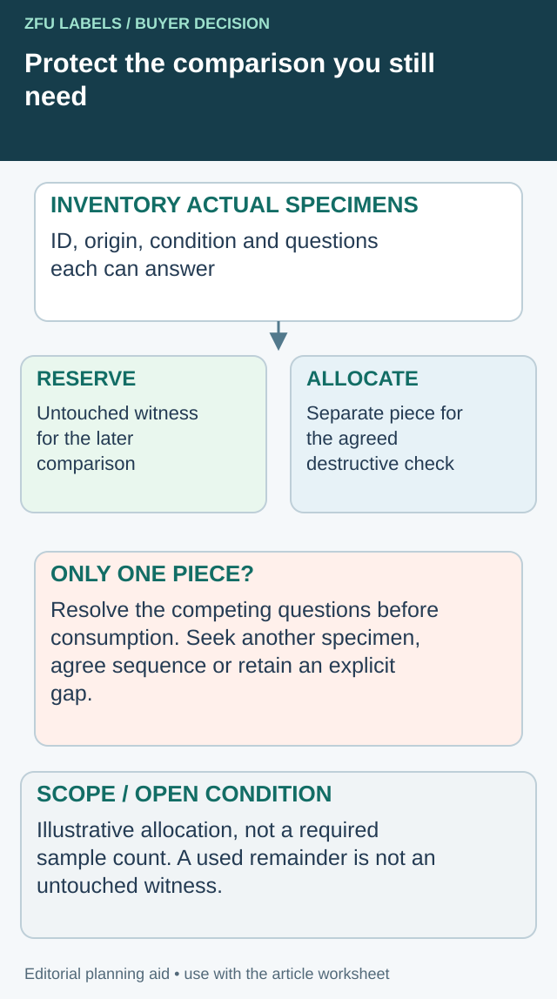

A retailer reports that a label has changed appearance after several weeks. The printer still has a loose label, the buyer has a photograph and the co-packer has an empty carton. None of those items clearly identifies the original delivered condition or the exposure that followed.
Plan retained samples around the questions you may need to answer later. Keep the material identity, condition and retrieval record with the sample. A drawer full of unidentified attractive labels offers little help when the disputed variable is construction, application or handling.

Allocate the evidence before anyone uses the last retain
An archive can be correctly identified and still fail an investigation if the only untouched piece is consumed first. Add a use-reservation ledger when a complaint requires several examinations. Its purpose is to decide which question each available piece can support and what evidence will remain afterward.


First inventory the actual pieces and their histories. Do not divide one specimen into several supposedly independent samples after a treatment has already affected it. A cut portion may retain useful information, but its origin and any shared exposure need to follow it. Photographing a specimen preserves a view; it does not replace the physical witness for every later question.
| Available material | Intended question | Proposed action | Reserve after action |
|---|---|---|---|
| Untouched delivery retain | What was the delivered construction/appearance? | Initial non-destructive documentation | Named untouched witness where practical |
| Separate identified piece | What does the agreed examination show? | Named destructive check with authorization | Remaining material and changed condition recorded |
| Returned affected pack | What condition reached the investigator? | Document before any cleaning or peeling | Preserve relevant affected area as agreed |
| No additional matched material | Can another question still be answered? | Request material or narrow the conclusion | Explicit evidence gap, not an invented control |
This is an editorial allocation model. It sets no universal specimen count, retention period or storage recipe. The responsible quality owner and examiner must specify what their actual work requires, including product-safe handling.
Resolve a conflict between two useful checks
Suppose, hypothetically, one team wants to peel the only unused applied pack while another needs its untouched edge condition. Both questions may be reasonable, but performing the first action can remove the second opportunity. Record that conflict before dispatch. Seek another representative specimen, change the sequence under the examiner's advice, or state that one question will remain unanswered.
Do not label a post-test remainder as an untouched retain. Give the examination an event reference, record who used it and update the remaining quantity and condition. If the piece leaves the archive, reserve it against further issue until its location and disposition are reconciled.
Keeping more material has storage and handling costs. Keeping less can constrain later conclusions. Choose the reserve around credible questions and actual requirements rather than collecting a large anonymous pile. For an urgent investigation, a smaller but well-identified set with declared gaps can be more useful than pretending a single repeatedly handled sample answers everything.
Decide what each retain must represent
An unused finished label can preserve the printed construction as delivered. A roll sample can preserve relevant web and liner features. An applied pack can show placement and the relationship between label and container. Each can support a different comparison, and none automatically represents every condition of the commercial batch.
Ask the quality owner which samples are proportionate to the actual risks and customer requirements. This article does not prescribe a universal retention quantity or period. Those decisions may depend on contracts, applicable requirements, product life and the investigation needs of the business.
Keep an approved appearance reference separate from routine production retains. The reference describes the accepted target; a production retain records what was supplied. Confusing them can move the target whenever a new batch arrives.
Preserve identity before preserving material
Record the supplier, purchase order, artwork revision, construction, manufacturing lot and roll origin where available. For an applied pack, identify the container and the packing event as well. The label supplier's production lot and the food producer's finished-product lot are related records, not necessarily the same identifier.
Include the date and reason the sample was taken. Was it selected at receipt, after application or after a particular exposure? A sample obtained after a complaint has a different history from an untouched delivery retain.
The repeat-color guide explains why working references need controlled replacement. Retains also need a known history so normal aging is not mistaken for the original delivery condition.
Use a retained-sample plan
| Record field | Purpose |
|---|---|
| Sample identifier | Retrieve the exact item without visual guessing |
| Material represented | SKU, revision, construction and relevant lot/roll |
| Sample form | Loose label, web section, unused roll sample or applied pack |
| Collection point | Receipt, production or named later stage |
| Condition/history | Unexposed, handled, chilled or another recorded condition |
| Storage method | Applicable instructions and protection from unintended change |
| Retention decision | Quantity, period, owner and basis |
| Access log | Removal, inspection, testing and return or disposal |
Use the plan to identify gaps before a complaint. If an applied pack cannot reasonably be retained, record the limitation and choose other evidence deliberately. Do not describe photographs as equivalent physical samples.
Store the sample without creating an unknown exposure
Follow the applicable material and product instructions. Protect the retain from uncontrolled handling, contamination or environmental change that would make later comparison misleading. Applied food packs may need product-specific handling that differs from loose printed labels; involve the responsible food or quality team.
Record the storage location and any meaningful change. A sample moved from a controlled archive to a sunny office shelf no longer has the same exposure history. If the conditions were not monitored, state that rather than assign a precise temperature or humidity afterward.
Avoid repeatedly touching, wiping or peeling the only retain. If destructive observations are anticipated, the quality owner should decide how many independent pieces are needed. A used test specimen should remain distinguishable from an untouched reference.
Match the retain to the reported symptom
For fading, compare the delivery reference with a sample from the reported exposure, while recognizing differences in light and handling history. The ink-fading guide separates the original appearance target from exposure controls.
For scuffing, preserve the observed contact area and the relevant packing or transit information. The scuff-method guide shows why different rub methods cannot be compared by their cycle count alone.
For adhesion, an unused label may help identify construction but cannot reproduce the original application conditions by itself. Ask for the actual pack, process records and relevant timing. Do not turn the existence of a retain into proof of a root cause it cannot establish.
Keep a complaint sample separate from the archive
When returned material arrives, record its source, handling and condition. Preserve the packaging and identification where relevant. A returned sample may have passed through several people before reaching the investigator, so mark unknown parts of its history.
Compare like questions rather than force identical conclusions from unlike samples. A delivery retain stored in darkness and a retail bottle exposed to light can help frame the investigation, but their difference alone does not quantify the effect of each exposure.
Record what the comparison supports and what remains unresolved. If the evidence only confirms that the artwork is the same, do not report that the material or production lot is therefore identical.
Make retrieval practical
Test whether another team member can find a sample using an order or lot reference. An archive that depends on one person's memory is fragile. Keep the index readable and link it to the relevant purchase and approval records.
At the end of the retention period, use the authorized disposal process and retain the necessary record. Do not quietly remove samples involved in an open complaint simply because the usual period has elapsed.
Resolve the specific label handoff
Include sample identities/forms, remaining quantities, proposed checks and the comparison still needed.
Prepare the label specification inquiry. The form opens an email draft for your review; attachments go through the listed email or WhatsApp route. Actual supply scope, pricing, samples and timing need project confirmation.
Related decisions: A Label Quality Complaint: Preserve the Pack and Roll Before Rework; Incoming Label Inspection: Define the Lot Before Choosing Samples; Label Roll Shelf Life: Separate the Dates Before Releasing Older Stock